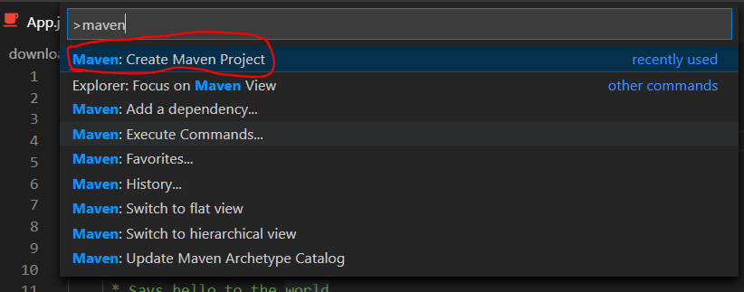
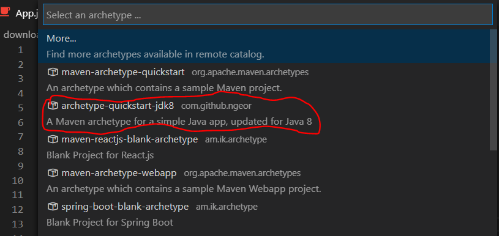
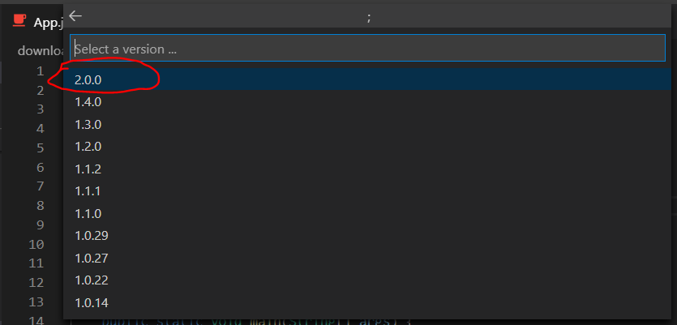
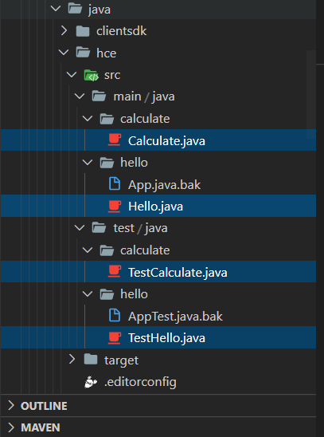
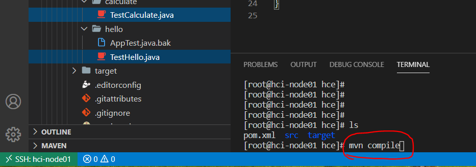
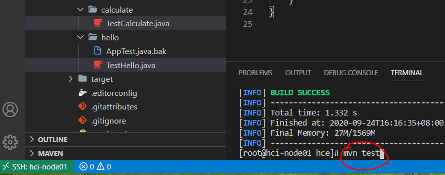

# Centos7 maven 安装
安装 maven 前提是安装有 jdk, yum 安装 maven 时候会自动安装 JDK.
(optional)// 多出来这两步是因为原来机器kernel版本台老, 原生的yum库安装maven自带JDK也比较老, 所以clean再cache, 然后安装maven | |
yum clean all | |
(optional) | |
yum makecache | |
wget http://repos.fedorapeople.org/repos/dchen/apache-maven/epel-apache-maven.repo -O /etc/yum.repos.d/epel-apache-maven.repo | |
yum -y install apache-maven | |
// 查找包路径 | |
rpm -qa|grep apache-maven |
# 配置阿里云镜像仓库
vim /etc/maven/settings.xml | |
// 定位到mirrors节点下添加下面配置 | |
<mirrors> | |
<mirror> | |
<id>nexus-aliyun</id> | |
<mirrorOf>central</mirrorOf> | |
<name>Nexus aliyun</name> | |
<url>http://maven.aliyun.com/nexus/content/groups/public</url> | |
</mirror> | |
</mirrors> |
# 配置 proxy
vim /etc/maven/settings.xml | |
<proxy> | |
<id>my-proxy1</id> | |
<active>true</active> | |
<protocol>http</protocol> | |
<host>child-prc.intel.com</host> | |
<port>913</port> | |
</proxy> | |
<proxy> | |
<id>my-proxy2</id> | |
<active>true</active> | |
<protocol>https</protocol> | |
<host>child-prc.intel.com</host> | |
<port>913</port> | |
</proxy> |
# 配置本地仓库
yum 安装完 maven 后默认的本地仓库地址:
ls /root/.m2/repository |
配置新的本地仓库:
vim /etc/maven/settings.xml | |
// 定位到这个节点进行编写 | |
<localRepository>/home/maven/repo</localRepository> |
# 指定 JDK 版本
配置创建项目的版本默认为 JDK8
vim /etc/maven/settings.xml | |
<profiles> | |
<profile> | |
<id>jdk-1.8</id> | |
<activation> | |
<activeByDefault>true</activeByDefault> | |
<jdk>1.8</jdk> | |
</activation> | |
<properties> | |
<maven.compiler.source>1.8</maven.compiler.source> | |
<maven.compiler.target>1.8</maven.compiler.target> | |
<maven.compiler.compilerVersion>1.8</maven.compiler.compilerVersion> | |
</properties> | |
</profile> | |
<profiles> |
# (optional) 设置 tomcat 用户名和密码
如果 tomcat 安装时候或安装后 tomcat 的配置文件没有设置用户名和密码此处可忽略
<servers> | |
<server> | |
<id>tomcat8</id> | |
<username>admin</username> | |
<password>123456</password> | |
</server> | |
</servers> |
# 测试 maven
// 查看maven版本 | |
mvn -v | |
// 自动到配置的Ali的Maven中央仓库下载缺省的或者Maven中央仓库更新的各种配置文件和类库（jar包)到Maven配置的本地仓库`/home/maven/repo`中 | |
mvn help:system |
# VScode 远程连接 Centos, 搭建 maven 项目简单步骤
首先需要安装一些 VScode 扩展插件
- maven for java
- language support for java
- debugger for java
- java test runner:junit
- java extension pack
Ctrl+shift+p, 搜索maven, 选择Maven:Create Maven Project
选择
archetype-quickstart-jdk8
选择最新的
2.0
选择文件夹来创建项目
输入相关参数
- groupid: 公司或组织的域名倒序 + 当前项目名称，会跟源代码文件中第一行 package 指定的一致.
- artifactId： 当前项目的模块名称，会在根目录创建此模块名称的文件夹，所有创建的项目文件都在这个文件夹下.
- version： 版本，可以默认直接 enter 键
- 可以发现在项目目录下多出了如下两个文件
ls /<Project path>/ | |
pom.xml src/ |
- 编译，测试
// 1. 编译, 会在项目目录下生成一个target/文件夹 | |
mvn compile | |
ls | |
pom.xml src/ target/ | |
// 2. 编写单元测试代码, 测试源码函数. | |
mvn test | |
// 3. 执行, 执行的文件名字一定要是`<groupId-name>.<class-name>` | |
mvn exec:java -Dexec.mainClass="cloud.App" | |
// 4. 清理, 删除target文件夹 | |
mvn clean |
中途可能会出错遇到一些问题，具体查看下面的 Problems.
# 下载指定 jar 包
在 Maven 官网上查找，可以很方便地查询到自己需要的 jar 文件 和 pom 引用.
Maven 官网 地址如下：
https://mvnrepository.com/
# VScode 给 maven 项目添加单元测试 (unit test)
要明白一点的是单元测试要测试的是函数方法，利用单元测试工具 junit 不用手动调用 main 函数去调用要测试的方法，junit 会自动执行要测试的方法.
因此在单元测试中不会手写 main 函数.
junit单元测试, 对测试方法顺序是乱序的, 某个方法要先执行可以加上@BeforeAll, 且方法声明为static, @Test方法不能加static.
junit5 + 版本更新后的参考文档: https://developer.ibm.com/zh/tutorials/j-introducing-junit5-part1-jupiter-api/

VScode 写的函数方法等存储在 hce/src/main/java/ 下的 calculate / 和 hello / 两个文件夹下
VScode 写的单元测试方法存储在 hce/src/test/java/ 下的 calculate / 和 hello / 两个文件夹下，注意文件夹名和上述同名，不写成同命要手动改写引入源码包路径.
pom.xml:(junit 和 junit.jupiter 区别没有比较过，可以在 (maven 包官网)[https://mvnrepository.com/] 搜索 junit 查看，这里是用 junit.jupiter)
<properties> | |
<junit.version>5.6.0</junit.version> | |
</properties> | |
...... | |
<dependencies> | |
<dependency> | |
<groupId>org.junit.jupiter</groupId> | |
<artifactId>junit-jupiter-api</artifactId> | |
<version>${junit.version}</version> | |
<scope>test</scope> | |
</dependency> | |
<dependency> | |
<groupId>org.junit.jupiter</groupId> | |
<artifactId>junit-jupiter-engine</artifactId> | |
<version>${junit.version}</version> | |
<scope>test</scope> | |
</dependency> | |
</dependencies> |
Calculate.java
package calculate; | |
/** | |
* Hello world! | |
*/ | |
public final class Calculate { | |
private Calculate() { | |
} | |
public static int add(int firstNumber, int secondNumber) { | |
return firstNumber + secondNumber; | |
} | |
public static int multiply(int multiplicand, int multiplier) { | |
return multiplicand * multiplier; | |
} | |
} |
Hello.java
package hello; | |
/** | |
* Hello world. | |
*/ | |
public final class Hello { | |
private Hello() { | |
} | |
public static String initMessage(String initInfo) { | |
return initInfo; | |
} | |
/** | |
* say Something. | |
*/ | |
public static String saySomething(String initInfo, String msg) { | |
String message = initInfo + " " + msg; | |
return message; | |
} | |
/** | |
* say nothing. | |
*/ | |
public static String sayNothing(String nomsg) { | |
return null; | |
} | |
} |
TestCalculate.java
package calculate; | |
import org.junit.jupiter.api.Test; | |
import static org.junit.jupiter.api.Assertions.assertEquals; | |
/** | |
* Unit test for simple App. | |
*/ | |
class TestCalculate { | |
@Test | |
public void add_TwoPlusTwo_ReturnsFour() { | |
// Arrange | |
final int expected = 4; | |
// Act | |
final int actual = Calculate.add(2, 2); | |
// Assert | |
assertEquals(expected, actual); | |
System.out.println("add successfully!"); | |
} | |
@Test | |
public void multiply_FourTimesTwo_ReturnsEight() { | |
// Arrange | |
final int expected = 8; | |
// Act | |
final int actual = Calculate.multiply(4, 2); | |
// Assert | |
assertEquals(expected, actual); | |
System.out.println("multiply successfully!"); | |
} | |
} |
TestHello.java
package hello; | |
import org.junit.jupiter.api.BeforeAll; | |
import org.junit.jupiter.api.Test; | |
import static org.junit.jupiter.api.Assertions.assertEquals; | |
import static org.junit.jupiter.api.Assertions.assertNotNull; | |
import static org.junit.jupiter.api.Assertions.assertNull; | |
/** | |
* Unit test for simple App. | |
*/ | |
public class TestHello { | |
private static String initInfo; | |
/** | |
* @BeofreAll 单元测试，方法必须为 static 静态方法. | |
* 被注解的（静态）方法将在当前类中的所有 @Test 方法前执行一次。 | |
*/ | |
@BeforeAll | |
public static void testInitMessage() { | |
initInfo = Hello.initMessage("Hello"); | |
assertNotNull(initInfo); | |
} | |
/** | |
* @Test 单元测试，方法不能加 static. | |
* 各个 @Test 方法间执行顺序为乱序 | |
*/ | |
@Test | |
public void testSaySomething() { | |
String info = null; | |
info = Hello.saySomething(initInfo, "World!"); | |
assertNotNull(info); | |
System.out.println(info); | |
} | |
@Test | |
public void testSayNothing() { | |
String info = null; | |
info = Hello.sayNothing("Hello World!"); | |
assertNull(info); | |
} | |
@Test | |
public void testHello() { | |
assertEquals(1, 1); | |
System.out.println("test something else successfully!"); | |
} | |
} |
打开终端，到 hce 项目根目录，依次执行 mvn compile 编译

[root@hci-node01 hce]# mvn compile | |
[INFO] Scanning for projects... | |
[INFO] | |
[INFO] ------------------------------------------------------------------------ | |
[INFO] Building hce 1.0-SNAPSHOT | |
[INFO] ------------------------------------------------------------------------ | |
[INFO] | |
[INFO] --- maven-enforcer-plugin:3.0.0-M3:enforce (default) @ hce --- | |
[INFO] | |
[INFO] --- maven-checkstyle-plugin:3.1.0:check (checkstyle) @ hce --- | |
[INFO] | |
[INFO] --- jacoco-maven-plugin:0.8.4:prepare-agent (pre-unit-test) @ hce --- | |
[INFO] argLine set to -javaagent:/home/maven/repo/org/jacoco/org.jacoco.agent/0.8.4/org.jacoco.agent-0.8.4-runtime.jar=destfile=/home/zhan/download/storage/minIO/client/java/hce/target/jacoco.exec | |
[INFO] | |
[INFO] --- maven-resources-plugin:2.6:resources (default-resources) @ hce --- | |
[INFO] Using 'UTF-8' encoding to copy filtered resources. | |
[INFO] skip non existing resourceDirectory /home/zhan/download/storage/minIO/client/java/hce/src/main/resources | |
[INFO] | |
[INFO] --- maven-compiler-plugin:3.1:compile (default-compile) @ hce --- | |
[INFO] Nothing to compile - all classes are up to date | |
[INFO] ------------------------------------------------------------------------ | |
[INFO] BUILD SUCCESS | |
[INFO] ------------------------------------------------------------------------ | |
[INFO] Total time: 1.354 s | |
[INFO] Finished at: 2020-09-24T17:42:25+08:00 | |
[INFO] Final Memory: 28M/1570M | |
[INFO] ------------------------------------------------------------------------ | |
[root@hci-node01 hce]# |
再执行 mvn test 进行单元测试.

[root@hci-node01 hce]# mvn test | |
[INFO] Scanning for projects... | |
[INFO] | |
[INFO] ------------------------------------------------------------------------ | |
[INFO] Building hce 1.0-SNAPSHOT | |
[INFO] ------------------------------------------------------------------------ | |
[INFO] | |
[INFO] --- maven-enforcer-plugin:3.0.0-M3:enforce (default) @ hce --- | |
[INFO] | |
[INFO] --- maven-checkstyle-plugin:3.1.0:check (checkstyle) @ hce --- | |
[INFO] | |
[INFO] --- jacoco-maven-plugin:0.8.4:prepare-agent (pre-unit-test) @ hce --- | |
[INFO] argLine set to -javaagent:/home/maven/repo/org/jacoco/org.jacoco.agent/0.8.4/org.jacoco.agent-0.8.4-runtime.jar=destfile=/home/zhan/download/storage/minIO/client/java/hce/target/jacoco.exec | |
[INFO] | |
[INFO] --- maven-resources-plugin:2.6:resources (default-resources) @ hce --- | |
[INFO] Using 'UTF-8' encoding to copy filtered resources. | |
[INFO] skip non existing resourceDirectory /home/zhan/download/storage/minIO/client/java/hce/src/main/resources | |
[INFO] | |
[INFO] --- maven-compiler-plugin:3.1:compile (default-compile) @ hce --- | |
[INFO] Nothing to compile - all classes are up to date | |
[INFO] | |
[INFO] --- maven-resources-plugin:2.6:testResources (default-testResources) @ hce --- | |
[INFO] Using 'UTF-8' encoding to copy filtered resources. | |
[INFO] skip non existing resourceDirectory /home/zhan/download/storage/minIO/client/java/hce/src/test/resources | |
[INFO] | |
[INFO] --- maven-compiler-plugin:3.1:testCompile (default-testCompile) @ hce --- | |
[INFO] Changes detected - recompiling the module! | |
[INFO] Compiling 2 source files to /home/zhan/download/storage/minIO/client/java/hce/target/test-classes | |
[INFO] | |
[INFO] --- maven-surefire-plugin:3.0.0-M4:test (default-test) @ hce --- | |
[INFO] | |
[INFO] ------------------------------------------------------- | |
[INFO] T E S T S | |
[INFO] ------------------------------------------------------- | |
[INFO] Running hello.TestHello | |
test something else successfully! | |
Hello World! | |
[INFO] Tests run: 3, Failures: 0, Errors: 0, Skipped: 0, Time elapsed: 0.039 s - in hello.TestHello | |
[INFO] Running calculate.TestCalculate | |
multiply successfully! | |
add successfully! | |
[INFO] Tests run: 2, Failures: 0, Errors: 0, Skipped: 0, Time elapsed: 0.003 s - in calculate.TestCalculate | |
[INFO] | |
[INFO] Results: | |
[INFO] | |
[INFO] Tests run: 5, Failures: 0, Errors: 0, Skipped: 0 | |
[INFO] | |
[INFO] | |
[INFO] --- jacoco-maven-plugin:0.8.4:report (post-unit-test) @ hce --- | |
[INFO] Loading execution data file /home/zhan/download/storage/minIO/client/java/hce/target/jacoco.exec | |
[INFO] Analyzed bundle 'hce' with 2 classes | |
[INFO] | |
[INFO] --- jacoco-maven-plugin:0.8.4:check (check-unit-test) @ hce --- | |
[INFO] Loading execution data file /home/zhan/download/storage/minIO/client/java/hce/target/jacoco.exec | |
[INFO] Analyzed bundle 'hce' with 2 classes | |
[INFO] All coverage checks have been met. | |
[INFO] ------------------------------------------------------------------------ | |
[INFO] BUILD SUCCESS | |
[INFO] ------------------------------------------------------------------------ | |
[INFO] Total time: 2.964 s | |
[INFO] Finished at: 2020-09-24T17:43:04+08:00 | |
[INFO] Final Memory: 39M/1581M | |
[INFO] ------------------------------------------------------------------------ | |
[root@hci-node01 hce]# |
# Problems
# 问题 1: Maven Version
Detected Maven Version: 3.5.2 is not in the allowed range 3.6.3.
原因是如 linux 系统装的 maven 版本是 3.5.2, 用 VScode 新建 maven 项目时候自动生成的 pom.xml 添加 maven 版本号为 3.6.3, 因此可以修改 pom.xml 里的 maven 版本，改为机器安装的 maven 版本就可以了.
修改相应错误产生的包中的 pox.xml 文件的 requireMavenVersion, 改为所需的 3.5.2
<configuration> | |
<rules> | |
<requireMavenVersion> | |
<version>3.5.2</version> | |
</requireMavenVersion> | |
</rules> | |
<fail>true</fail> | |
</configuration> |
# 问题 2：No compiler
Maven 编报错：No compiler is provided in this environment. Perhaps you are running on a JRE rather a JDK?
第一步: 参看上面的指定 JDK 版本确定是否在安装 maven 时候，把 jdk 配置进 maven 的配置文件 /etc/maven/setting.xml 文件里
第二步: 查看 pox.xml 文件中的 compiler 和 linux 系统中 java -v 和 javac -v 版本是否一致.
<maven.compiler.source>1.8</maven.compiler.source> | |
<maven.compiler.target>1.8</maven.compiler.target> |
# 问题 3: ImportOrder
java 导入包编译时候出错报 ImportOrder: Wrong order for 'io.minio.errors.MinioException' import
原因是 checkstyle 对 java import 包的顺序有要求
方法一: 修改 pom.xml 直接禁用:
<plugin> | |
<groupId>org.apache.maven.plugins</groupId> | |
<artifactId>maven-checkstyle-plugin</artifactId> | |
<configuration> | |
<skip>true</skip> | |
</configuration> | |
</plugin> |
方法二: 根据 checkstyle 定义，修改导入包顺序
checkstyle 导入包顺序定义官网：ImportOrder
记住要按字典顺序排序导入这一条: ensures that imports within each group are in lexicographic order